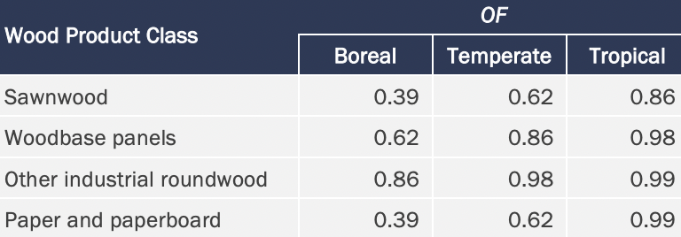
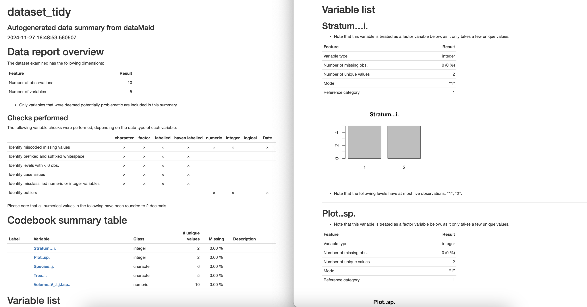

VM0010 Starter Template
![]()
The following workflow provides a starter script for quantifying greenhouse gas emissions reduction of projects designed under the VM0010 VCS Methodology, V1.4.
REDD+, VCS, Verra, Carbon verification
1. Preprocess data
Import dummy data
set.seed(333)
dataset_raw <- read_excel("./R/assets/dataset_raw.xlsx")
write.csv(dataset_raw, "./R/assets/dataset_tidy.csv", row.names = FALSE)
dataset_tidy <- read.csv("./R/assets/dataset_tidy.csv")
dataset_tidy |> kbl() |> kable_styling()| Stratum...i. | Plot..sp. | Species..j. | Tree..l. | Volume..V_.l.j.I.sp.. |
|---|---|---|---|---|
| 1 | 1 | Sp1 | t1 | 3.30 |
| 1 | 1 | Sp1 | t2 | 4.80 |
| 1 | 1 | Sp1 | t3 | 4.08 |
| 1 | 2 | Sp4 | t1 | 1.50 |
| 1 | 2 | Sp4 | t2 | 1.68 |
| 2 | 1 | Sp1 | t1 | 1.38 |
| 2 | 1 | Sp2 | t2 | 3.24 |
| 2 | 1 | Sp3 | t3 | 3.72 |
| 2 | 1 | sp4 | t4 | 2.94 |
| 2 | 1 | Sp5 | t5 | 3.36 |
Review dummy data
str(dataset_tidy)
dplyr::count(dataset_tidy, Species..j.)
saveHTML(dataMaid::makeDataReport(
dataset_tidy,
output = "html",
codebook = TRUE,
onlyProblematic = TRUE,
visuals = setVisuals(all = "basicVisual"),
replace = TRUE
)
) # output "dataMaid_dataset_tidy.html" shown in Appendix A.1'data.frame': 10 obs. of 5 variables:
$ Stratum...i. : int 1 1 1 1 1 2 2 2 2 2
$ Plot..sp. : int 1 1 1 2 2 1 1 1 1 1
$ Species..j. : chr "Sp1" "Sp1" "Sp1" "Sp4" ...
$ Tree..l. : chr "t1" "t2" "t3" "t1" ...
$ Volume..V_.l.j.I.sp..: num 3.3 4.8 4.08 1.5 1.68 1.38 3.24 3.72 2.94 3.36| Species..j. | n |
|---|---|
| Sp1 | 4 |
| Sp2 | 1 |
| Sp3 | 1 |
| Sp4 | 2 |
| Sp5 | 1 |
| sp4 | 1 |
Tidy dummy data
Clean dataset and relabel to match VM0010 Verra Methodology and Tidyverse style guide
data.table::setnames(dataset_tidy, old = "Stratum...i.", new = "stratum_i", skip_absent = TRUE)
data.table::setnames(dataset_tidy, old = "Species..j.", new = "species_j", skip_absent = TRUE)
data.table::setnames(dataset_tidy, old = "Plot..sp.", new = "plot_sp", skip_absent = TRUE)
data.table::setnames(dataset_tidy, old = "Tree..l.", new = "tree_l", skip_absent = TRUE)
data.table::setnames(dataset_tidy, old = "Volume..V_.l.j.I.sp..", new = "volume", skip_absent = TRUE)
dataset_tidy$species_j[dataset_tidy$species_j == "sp4"] <- "Sp4"
dataset_tidy$species_j = as.factor(dataset_tidy$species_j)
dataset_tidy$stratum_i = as.factor(dataset_tidy$stratum_i)Compute new variables & save copy of cleaned dataset_tidy.csv
dataset_tidy$bcef_r = 0.7
dataset_tidy$cf = 0.5
dataset_tidy$d = 0.5
dataset_tidy$a_sp = 0.1
dataset_tidy$a_sp_m2 = dataset_tidy$a_sp * 10000
dataset_tidy = dataset_tidy %>%
group_by(stratum_i) %>%
mutate(a_I_m2 = sum(a_sp_m2), a_I_ha = sum(a_sp))
write.csv(dataset_tidy, "./R/assets/dataset_tidy.csv", row.names = FALSE)
dataset_tidy |> kbl() |> kable_styling()| stratum_i | plot_sp | species_j | tree_l | volume | bcef_r | cf | d | a_sp | a_sp_m2 | a_I_m2 | a_I_ha |
|---|---|---|---|---|---|---|---|---|---|---|---|
| 1 | 1 | Sp1 | t1 | 3.30 | 0.7 | 0.5 | 0.5 | 0.1 | 1000 | 5000 | 0.5 |
| 1 | 1 | Sp1 | t2 | 4.80 | 0.7 | 0.5 | 0.5 | 0.1 | 1000 | 5000 | 0.5 |
| 1 | 1 | Sp1 | t3 | 4.08 | 0.7 | 0.5 | 0.5 | 0.1 | 1000 | 5000 | 0.5 |
| 1 | 2 | Sp4 | t1 | 1.50 | 0.7 | 0.5 | 0.5 | 0.1 | 1000 | 5000 | 0.5 |
| 1 | 2 | Sp4 | t2 | 1.68 | 0.7 | 0.5 | 0.5 | 0.1 | 1000 | 5000 | 0.5 |
| 2 | 1 | Sp1 | t1 | 1.38 | 0.7 | 0.5 | 0.5 | 0.1 | 1000 | 5000 | 0.5 |
| 2 | 1 | Sp2 | t2 | 3.24 | 0.7 | 0.5 | 0.5 | 0.1 | 1000 | 5000 | 0.5 |
| 2 | 1 | Sp3 | t3 | 3.72 | 0.7 | 0.5 | 0.5 | 0.1 | 1000 | 5000 | 0.5 |
| 2 | 1 | Sp4 | t4 | 2.94 | 0.7 | 0.5 | 0.5 | 0.1 | 1000 | 5000 | 0.5 |
| 2 | 1 | Sp5 | t5 | 3.36 | 0.7 | 0.5 | 0.5 | 0.1 | 1000 | 5000 | 0.5 |
2. Compute Equations
Note all four equations that follow derive estimates according to specific species, whether measured at the plot level, stratum or globally. Hence, caution is advised when computing initial, absolute estimates and when deriving or applying hectare expansion factors.
On page 19 of VM0010 Methodology, ‘equation 1’ calculates merchantable timber volume in cubic meters using the following:
EQ1: Plot biomass
\[V_{j,i|sp} = \sum_{l = 1}^{L} V_{l,j,i,sp}\]
where \(V_{j,i|sp}\) refers to the sum of merchantable volume of species j from plot sp in stratum i, as computed in the following.
dataset_tidy = dataset_tidy |>
group_by(species_j, stratum_i, plot_sp) |>
mutate(vji_sp_m3 = sum(volume))
# compute new variable 'vji_sp_m3'
data.table::setDT(dataset_tidy)[, .(
vji_sp_m3 = sum(volume)
),
by = .(stratum_i, plot_sp, species_j)
] |> kbl() |> kable_styling()| stratum_i | plot_sp | species_j | vji_sp_m3 |
|---|---|---|---|
| 1 | 1 | Sp1 | 12.18 |
| 1 | 2 | Sp4 | 3.18 |
| 2 | 1 | Sp1 | 1.38 |
| 2 | 1 | Sp2 | 3.24 |
| 2 | 1 | Sp3 | 3.72 |
| 2 | 1 | Sp4 | 2.94 |
| 2 | 1 | Sp5 | 3.36 |
EQ2: Strata biomass
On page 19 of the VM0010 Methodology, ‘equation 2’ provides calculation of merchantable timber volume of a species at the stratum level:
\[V_{j,i|BSL} = \displaystyle \frac{1}{SP} \sum_{sp=1}^{sp} \displaystyle \frac{V_{j,i,sp}}{A_{sp}}\]
where \(V_{j,i|BSL}\) refers to the mean merchantable timber volume of species j measured across all plots within stratum i in the baseline scenario. Volume estimates are derived in terms of m3/ha-1 using an expansion factor derived as the ratio of plot area 1,000m2 to 10,000m2, as follows.
dataset_tidy = dataset_tidy |>
group_by(stratum_i, species_j) |>
mutate(vji_ha_m3 = mean(vji_sp_m3) * 10)
data.table::setDT(dataset_tidy)[, .(
vji_sp_m3,
vji_ha_m3
),
by = .(stratum_i, species_j)
] |> kbl() |> kable_styling()| stratum_i | species_j | vji_sp_m3 | vji_ha_m3 |
|---|---|---|---|
| 1 | Sp1 | 12.18 | 121.8 |
| 1 | Sp1 | 12.18 | 121.8 |
| 1 | Sp1 | 12.18 | 121.8 |
| 1 | Sp4 | 3.18 | 31.8 |
| 1 | Sp4 | 3.18 | 31.8 |
| 2 | Sp1 | 1.38 | 13.8 |
| 2 | Sp2 | 3.24 | 32.4 |
| 2 | Sp3 | 3.72 | 37.2 |
| 2 | Sp4 | 2.94 | 29.4 |
| 2 | Sp5 | 3.36 | 33.6 |
EQ3: Harvest carbon
On page 20 of the VM0010 Methodology, ‘equation 3’ provides calculation of carbon stock of harvested timber volumes for species i in stratum i.
In the absence of harvest plan data, carbon stocks of commercial timber will be derived from the full inventory dataset_tidy.
This differs to ‘equation 3’ below, which measures mean carbon stock from volumes of ‘harvested biomass’ \(C_{HB,j,i|BSL}\) comprised of volumes estimates from extracted timber that is destined off-site for market sales, in addition to volume estimates from extracted timber that is remaining on-site due to damage or use during site operations and road construction. The difference in destinations of these carbon stocks means that alternative carbon factors must be applied in their calculation, as indicated in following two equations
\[C_{HB,j,i|BSL} = (V_{EX,j,i|BSL} + V_{EX,INF,j,i|BSL} ) * BCEF_{R} * CF_{j}\]
Carbon estimates are calculated in units of metric tons per hectare (tC/ha-1) by multiplying mean volume per hectare of extracted timber of species i from stratum j by the carbon fraction \(CF\) (default = 0.5) and biomass conversion and expansion factor \(BCEF_{R}\) of that species. If needed, VM0010 methoodology provides guidance on approriate literature source for defining CF with prioritiy of local forest types over national and regional forest types, over forest types from neighboring countries. However, if defaulting to global forest type values, recommendations point to chapter four of (Krey et al., n.d.) that cite value of 1.11. We rely on the provided value of 0.7.
dataset_tidy <- dataset_tidy %>%
mutate(chb_ha_tC = vji_ha_m3 * bcef_r * cf)
data.table::setDT(dataset_tidy)[, .(
vji_sp_m3,
vji_ha_m3,
chb_ha_tC
),
by = .(stratum_i, species_j)
] |> kbl() |> kable_styling()| stratum_i | species_j | vji_sp_m3 | vji_ha_m3 | chb_ha_tC |
|---|---|---|---|---|
| 1 | Sp1 | 12.18 | 121.8 | 42.63 |
| 1 | Sp1 | 12.18 | 121.8 | 42.63 |
| 1 | Sp1 | 12.18 | 121.8 | 42.63 |
| 1 | Sp4 | 3.18 | 31.8 | 11.13 |
| 1 | Sp4 | 3.18 | 31.8 | 11.13 |
| 2 | Sp1 | 1.38 | 13.8 | 4.83 |
| 2 | Sp2 | 3.24 | 32.4 | 11.34 |
| 2 | Sp3 | 3.72 | 37.2 | 13.02 |
| 2 | Sp4 | 2.94 | 29.4 | 10.29 |
| 2 | Sp5 | 3.36 | 33.6 | 11.76 |
EQ4: Extracted carbon
“Not all of the harvested biomass leaves the forest because the timber harvested has two components: 1) wood removed to market (extracted timber) and 2) wood remaining in the forest as a result of harvest” (VM0010, 2024:21).
To account for all harvest removals, ‘equation 4’ computes mean carbon of species i in stratum j by adding mean timber to market (\(V_{EX,j,i|BSL}\)) and mean timber used in harvest infrastructure (\(V_{EX,INF,j,i|BSL}\)). This sum is then multiplied by the wood density \(D\) and carbon fraction \(CF\) of that species and reported in units of tC.ha-1 using the following formula:
\[C_{EX,j,i|BSL} = (V_{EX,j,i|BSL} + V_{EX,INF,j,i|BSL} ) * D_{j} * CF_{j}\]
dataset_tidy <- dataset_tidy %>%
mutate(cex_ha_tC = vji_ha_m3 * d * cf)
data.table::setDT(dataset_tidy)[, .(
vji_sp_m3,
vji_ha_m3,
chb_ha_tC,
cex_ha_tC
),
by = .(stratum_i, species_j)
] |> kbl() |> kable_styling()| stratum_i | species_j | vji_sp_m3 | vji_ha_m3 | chb_ha_tC | cex_ha_tC |
|---|---|---|---|---|---|
| 1 | Sp1 | 12.18 | 121.8 | 42.63 | 30.45 |
| 1 | Sp1 | 12.18 | 121.8 | 42.63 | 30.45 |
| 1 | Sp1 | 12.18 | 121.8 | 42.63 | 30.45 |
| 1 | Sp4 | 3.18 | 31.8 | 11.13 | 7.95 |
| 1 | Sp4 | 3.18 | 31.8 | 11.13 | 7.95 |
| 2 | Sp1 | 1.38 | 13.8 | 4.83 | 3.45 |
| 2 | Sp2 | 3.24 | 32.4 | 11.34 | 8.10 |
| 2 | Sp3 | 3.72 | 37.2 | 13.02 | 9.30 |
| 2 | Sp4 | 2.94 | 29.4 | 10.29 | 7.35 |
| 2 | Sp5 | 3.36 | 33.6 | 11.76 | 8.40 |
EQ5: Slash carbon
\[∆C_{DWSLASH_,i,p|BSL} = \sum_{i=1}^{j} \space [C_{HB,j,i|BSL} - C_{EX,j,i|BSL} + C_{RSD,j,i|BSL} + C_{notHB,inf,j,i|BSL}]\]
Equation 5 computes carbon change produced by slash as “the difference between the total carbon stock of the harvested biomass and the carbon stock of the extracted timber, plus the residual stand damage and biomass of trees left to decay as a result forestry infrastructure establishment”. Specifically, values of \(C_{notHB,inf,j,i|BSL}\) are computed by applying a fractional value of timber used in harvesting infrastructure development (\(F_{V,INF,HWP}\)), which may be provided by project proponent, and if missing will be conservatively assumed as 0.0%.
EQ6: Damaged carbon
\(C_{RSD,j,i\|BSL}\) is defined in units of tC·ha-1 as mean carbon change from residual stand damage as computed in the following:
\[C_{RSD,j,i\|BSL} = C_{EX,j,i|BSL} \times F_{RSD|BSL}\] where \(F_{RSD|BSL}\) represents a dimensionless value for the factor of “residual stand damage” per species in that area. On page 56 of the VM0010 document, an example reference is cited for sourcing residual stand damage values (Winjum, Brown, and Schlamadinger 1998). We apply the reported value of Congo operations of 1.74 t compute the following:
dataset_tidy = dataset_tidy %>%
mutate(f_rsd = 1.74)
dataset_tidy = dataset_tidy %>%
mutate(c_rsd = cex_ha_tC * f_rsd)
data.table::setDT(dataset_tidy)[, .(
vji_sp_m3,
vji_ha_m3,
chb_ha_tC,
c_rsd
),
by = .(stratum_i, species_j)
] |> kbl() |> kable_styling()| stratum_i | species_j | vji_sp_m3 | vji_ha_m3 | chb_ha_tC | c_rsd |
|---|---|---|---|---|---|
| 1 | Sp1 | 12.18 | 121.8 | 42.63 | 52.983 |
| 1 | Sp1 | 12.18 | 121.8 | 42.63 | 52.983 |
| 1 | Sp1 | 12.18 | 121.8 | 42.63 | 52.983 |
| 1 | Sp4 | 3.18 | 31.8 | 11.13 | 13.833 |
| 1 | Sp4 | 3.18 | 31.8 | 11.13 | 13.833 |
| 2 | Sp1 | 1.38 | 13.8 | 4.83 | 6.003 |
| 2 | Sp2 | 3.24 | 32.4 | 11.34 | 14.094 |
| 2 | Sp3 | 3.72 | 37.2 | 13.02 | 16.182 |
| 2 | Sp4 | 2.94 | 29.4 | 10.29 | 12.789 |
| 2 | Sp5 | 3.36 | 33.6 | 11.76 | 14.616 |
EQ7: Undamaged carbon
Equation 7 computes mean carbon volume of biomass that was not extracted during the construction of harvest infrastructure as follows:
\[C_{notHB,inf,j,i|BSL} = V_{notEX,inf,j,i|BSL} \times BCEF_R \times CF_j\]
EQ8: Wood products
Sampling criteria indicate that carbon of wood products is quantified in terms of its volume at time of harvest, while applying conversion factors provided in Winjum et al (1998):
\[C_{EX,i|BSL} = \sum_{j=1}^{J} C_{EX,j,i|BSL}\]
At this stage, It is advised to assign gross percentages of volume extracted to wood product classes on the basis of local expert knowledge of harvest activities and markets. Wood product classes may include sawnwood, panels, roundwood, paper, etc. In addition, the amount of carbon stored in wood products that would decay within three years after harvest are assumed to be emitted at the time of harvest
EQ9: HWP carbon loss year-0
Equation 9 calculates mean carbon immediately emmited from harvested volumes at the time of harvest, as follows:
\[ ∆C_{WP0,i|BSL} = \sum \space (C_{EX,i,k|BSL} \times WW_k + SLF_k) \]
where input variables \(SLF_f\) and \(WW_k\) are derived as the fraction of carbon immediately emitted from specific short-lived wood products, and the fraction of carbon immediately emitted from wood waste, respectively.
EQ10: HWP carbon store
Alternatively, equation 10 computes mean carbon not immediately emitted from harvest volumes at the time of harvest (year=0), as follows:
\[ C_{WP,i|BSL} = \sum \space (C_{EX,i,k|BSL} - ∆C_{WP0,i|BSL}) \]
EQ11: HWP carbon loss year-100
Equation 11 computes carbon stored in wood products that are assumed to be retired between 3 - 100 years after harvest from stratum i in land parcel p (tC ha-1), where \(OF_k\) provides the fraction of biomass carbon for wood product type k that is assumed to be emitted to the atmosphere between 3 and 100 years of timber harvest. Winjum, Brown, and Schlamadinger (1998) gives annual oxidation fractions for each class of wood products split by forest region (boreal, temperate and tropical), which is estimated to provide the fraction of carbon that is oxidized between the 3rd and the 100th year after initial harvest, as follows:
\[ ∆C_{WP100,i,p|BSL} = \sum \space (C_{WP,i|BSL} \times OF_k) \]
where \(OF_k\) is defined in VM0010 documentation as the fraction of biomass carbon per product type k that is emitted to atmosphere in 100 years following timber harvest:

EQ12: Fuel emissions
Total fuel emissions are derived from all sources presented in Table 2 on page 12 of [VM0010](https://verra.org/wp-content/uploads/2024/10/VM0010_IFM_LtPF_v1.4_Clean_10282024.pdf). Specific emissions variables are defined in subsequent equations:
\[C_{FUEL} = \frac{E_{HARVEST} + E_{HAULING} + E_{TRANSPORT} + E_{PROCESSING}} {\frac{44}{12}}\]
EQ13: Harvesting fuel emissions
\[ E_{HARVEST} = FC_{HARVEST} \times EF_{FUEL} \times \sum_{j,i,p} \space V_{EX,j,i|BSL} \times A_i \]
where \(FC_{HARVEST}\) derives volume of fuel consumed by harvest operators per m3 of extracted log (kL/m-3) and \(EF_{FUEL}\) represents a fuel emission factor (tCO2e kL-1). These input variables must be derived through the common practice pathway method. The following sources of information are permitted for this: • Data from other forest management companies in the region; or • Data from peer reviewed literature (or published by government agency)
EQ14: Hauling fuel emissions
\[ E_{HAULING} = FC_{HAULING} \times EF_{FUEL} \times V{EX,j,i|BSL} \times A_i \]
EQ15: Transport fuel emissions
\[ N_{TRUCKS-TRANSPORT} = \frac{\sum_{j,i} V_{EX,j,i|BSL} \times A_i}{CAP_{TRUCK}}\]
Appendix
A.1 DataMaid audit
htmltools::includeHTML("dataMaid_dataset_tidy.html")
devtools::session_info()─ Session info ───────────────────────────────────────────────────────────────
setting value
version R version 4.4.2 Patched (2024-11-18 r87347)
os macOS Sequoia 15.1.1
system aarch64, darwin20
ui X11
language (EN)
collate en_US.UTF-8
ctype en_US.UTF-8
tz America/Vancouver
date 2024-11-29
pandoc 3.5 @ /usr/local/bin/ (via rmarkdown)
─ Packages ───────────────────────────────────────────────────────────────────
package * version date (UTC) lib source
animation * 2.7 2021-10-07 [1] CRAN (R 4.4.0)
assertthat 0.2.1 2019-03-21 [1] CRAN (R 4.4.0)
BIOMASS * 2.1.11 2023-09-29 [1] CRAN (R 4.4.0)
cachem 1.1.0 2024-05-16 [1] CRAN (R 4.4.0)
cellranger 1.1.0 2016-07-27 [1] CRAN (R 4.4.0)
class 7.3-22 2023-05-03 [1] CRAN (R 4.4.2)
classInt 0.4-10 2023-09-05 [1] CRAN (R 4.4.0)
cli 3.6.3 2024-06-21 [1] CRAN (R 4.4.0)
codetools 0.2-20 2024-03-31 [1] CRAN (R 4.4.2)
colorspace 2.1-1 2024-07-26 [1] CRAN (R 4.4.0)
data.table 1.16.2 2024-10-10 [1] CRAN (R 4.4.1)
dataMaid * 1.4.1 2021-10-08 [1] CRAN (R 4.4.0)
DBI 1.2.3 2024-06-02 [1] CRAN (R 4.4.0)
DEoptimR 1.1-3-1 2024-11-23 [1] CRAN (R 4.4.1)
devtools 2.4.5 2022-10-11 [1] CRAN (R 4.4.0)
digest 0.6.37 2024-08-19 [1] CRAN (R 4.4.1)
dplyr * 1.1.4 2023-11-17 [1] CRAN (R 4.4.0)
e1071 1.7-16 2024-09-16 [1] CRAN (R 4.4.1)
easypackages 0.1.0 2016-12-05 [1] CRAN (R 4.4.0)
ellipsis 0.3.2 2021-04-29 [1] CRAN (R 4.4.0)
evaluate 1.0.1 2024-10-10 [1] CRAN (R 4.4.1)
extrafont * 0.19 2023-01-18 [1] CRAN (R 4.4.0)
extrafontdb 1.0 2012-06-11 [1] CRAN (R 4.4.0)
fansi 1.0.6 2023-12-08 [1] CRAN (R 4.4.0)
fastmap 1.2.0 2024-05-15 [1] CRAN (R 4.4.0)
forcats 1.0.0 2023-01-29 [1] CRAN (R 4.4.0)
fs 1.6.5 2024-10-30 [1] CRAN (R 4.4.1)
generics 0.1.3 2022-07-05 [1] CRAN (R 4.4.0)
ggplot2 3.5.1 2024-04-23 [1] CRAN (R 4.4.0)
glue 1.8.0 2024-09-30 [1] CRAN (R 4.4.1)
gridExtra 2.3 2017-09-09 [1] CRAN (R 4.4.0)
gtable 0.3.6 2024-10-25 [1] CRAN (R 4.4.1)
haven 2.5.4 2023-11-30 [1] CRAN (R 4.4.0)
hms 1.1.3 2023-03-21 [1] CRAN (R 4.4.0)
htmltools * 0.5.8.1 2024-04-04 [1] CRAN (R 4.4.0)
htmlwidgets 1.6.4 2023-12-06 [1] CRAN (R 4.4.0)
httpuv 1.6.15 2024-03-26 [1] CRAN (R 4.4.0)
janitor * 2.2.0 2023-02-02 [1] CRAN (R 4.4.0)
jsonlite 1.8.9 2024-09-20 [1] CRAN (R 4.4.1)
kableExtra * 1.4.0 2024-01-24 [1] CRAN (R 4.4.0)
KernSmooth 2.23-24 2024-05-17 [1] CRAN (R 4.4.2)
knitr * 1.49 2024-11-08 [1] CRAN (R 4.4.1)
later 1.4.1 2024-11-27 [1] CRAN (R 4.4.1)
lifecycle 1.0.4 2023-11-07 [1] CRAN (R 4.4.0)
lubridate 1.9.3 2023-09-27 [1] CRAN (R 4.4.0)
magrittr 2.0.3 2022-03-30 [1] CRAN (R 4.4.0)
memoise 2.0.1 2021-11-26 [1] CRAN (R 4.4.0)
mime 0.12 2021-09-28 [1] CRAN (R 4.4.0)
miniUI 0.1.1.1 2018-05-18 [1] CRAN (R 4.4.0)
minpack.lm 1.2-4 2023-09-11 [1] CRAN (R 4.4.0)
munsell 0.5.1 2024-04-01 [1] CRAN (R 4.4.0)
pander 0.6.5 2022-03-18 [1] CRAN (R 4.4.0)
pillar 1.9.0 2023-03-22 [1] CRAN (R 4.4.0)
pkgbuild 1.4.5 2024-10-28 [1] CRAN (R 4.4.1)
pkgconfig 2.0.3 2019-09-22 [1] CRAN (R 4.4.0)
pkgload 1.4.0 2024-06-28 [1] CRAN (R 4.4.0)
profvis 0.4.0 2024-09-20 [1] CRAN (R 4.4.1)
promises 1.3.2 2024-11-28 [1] CRAN (R 4.4.1)
proxy 0.4-27 2022-06-09 [1] CRAN (R 4.4.0)
purrr 1.0.2 2023-08-10 [1] CRAN (R 4.4.0)
R6 2.5.1 2021-08-19 [1] CRAN (R 4.4.0)
rappdirs 0.3.3 2021-01-31 [1] CRAN (R 4.4.0)
Rcpp 1.0.13-1 2024-11-02 [1] CRAN (R 4.4.1)
readxl * 1.4.3 2023-07-06 [1] CRAN (R 4.4.0)
remotes 2.5.0 2024-03-17 [1] CRAN (R 4.4.0)
rlang 1.1.4 2024-06-04 [1] CRAN (R 4.4.0)
rmarkdown 2.29 2024-11-04 [1] CRAN (R 4.4.1)
robustbase 0.99-4-1 2024-09-27 [1] CRAN (R 4.4.1)
rstudioapi 0.17.1 2024-10-22 [1] CRAN (R 4.4.1)
Rttf2pt1 1.3.12 2023-01-22 [1] CRAN (R 4.4.0)
scales 1.3.0 2023-11-28 [1] CRAN (R 4.4.0)
sessioninfo 1.2.2 2021-12-06 [1] CRAN (R 4.4.0)
sf 1.0-19 2024-11-05 [1] CRAN (R 4.4.1)
shiny 1.9.1 2024-08-01 [1] CRAN (R 4.4.0)
snakecase 0.11.1 2023-08-27 [1] CRAN (R 4.4.0)
stringi 1.8.4 2024-05-06 [1] CRAN (R 4.4.0)
stringr 1.5.1 2023-11-14 [1] CRAN (R 4.4.0)
svglite 2.1.3 2023-12-08 [1] CRAN (R 4.4.0)
systemfonts 1.1.0 2024-05-15 [1] CRAN (R 4.4.0)
terra 1.7-78 2024-05-22 [1] CRAN (R 4.4.0)
tibble 3.2.1 2023-03-20 [1] CRAN (R 4.4.0)
tidyselect 1.2.1 2024-03-11 [1] CRAN (R 4.4.0)
timechange 0.3.0 2024-01-18 [1] CRAN (R 4.4.0)
tinytex * 0.54 2024-11-01 [1] CRAN (R 4.4.1)
units 0.8-5 2023-11-28 [1] CRAN (R 4.4.0)
urlchecker 1.0.1 2021-11-30 [1] CRAN (R 4.4.0)
usethis 3.1.0 2024-11-26 [1] CRAN (R 4.4.1)
utf8 1.2.4 2023-10-22 [1] CRAN (R 4.4.0)
vctrs 0.6.5 2023-12-01 [1] CRAN (R 4.4.0)
viridisLite 0.4.2 2023-05-02 [1] CRAN (R 4.4.0)
xfun 0.49 2024-10-31 [1] CRAN (R 4.4.1)
xml2 1.3.6 2023-12-04 [1] CRAN (R 4.4.0)
xtable 1.8-4 2019-04-21 [1] CRAN (R 4.4.0)
yaml 2.3.10 2024-07-26 [1] CRAN (R 4.4.0)
[1] /Library/Frameworks/R.framework/Versions/4.4-arm64/Resources/library
──────────────────────────────────────────────────────────────────────────────